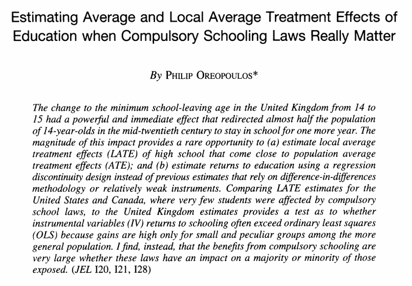
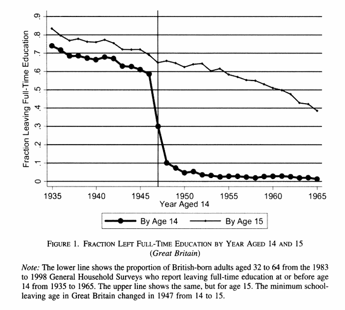
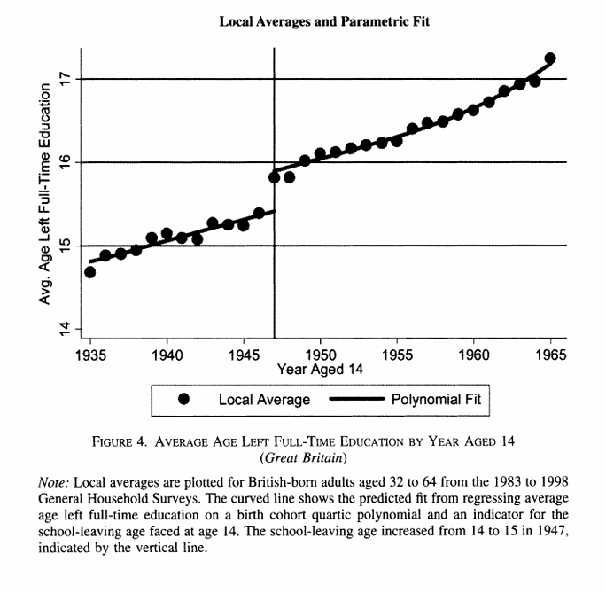
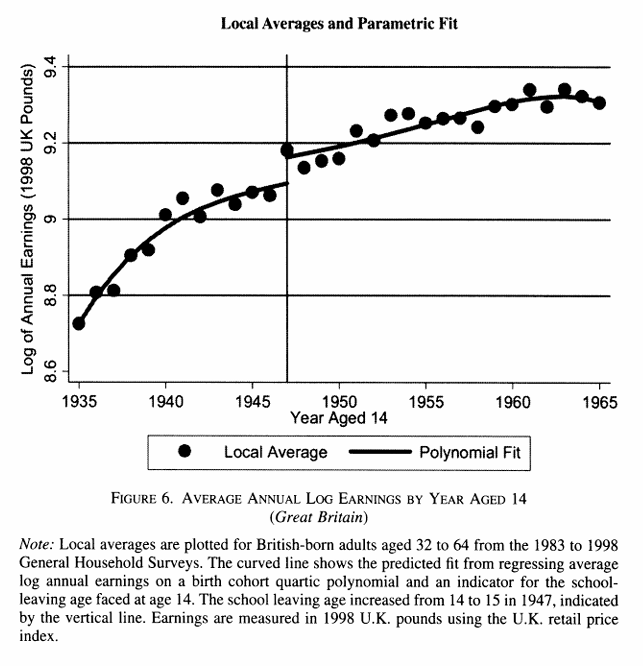
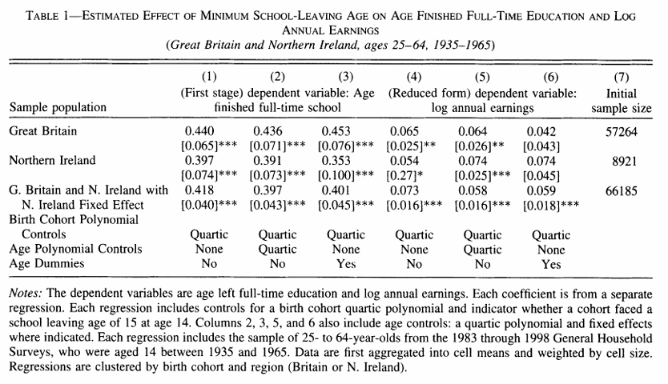
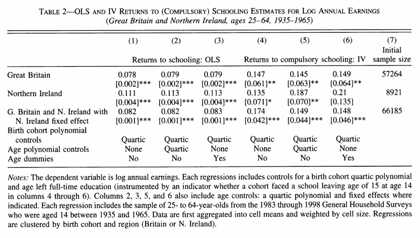

model1 model2
------------------------------------------------
educ 0.0654 *** 0.0544 ***
(0.0063) (0.0069)
exper 0.0140 *** 0.0141 ***
(0.0032) (0.0032)
tenure 0.0117 *** 0.0114 ***
(0.0025) (0.0024)
married 0.1994 *** 0.1998 ***
(0.0391) (0.0388)
south -0.0909 *** -0.0802 ***
(0.0262) (0.0263)
urban 0.1839 *** 0.1819 ***
(0.0270) (0.0268)
black -0.1883 *** -0.1431 ***
(0.0377) (0.0395)
IQ 0.0036 ***
(0.0010)
_cons 5.3955 *** 5.1764 ***
(0.1132) (0.1280)
Number of observations 935 935
R-squared 0.253 0.263
------------------------------------------------
*** p<.01, ** p<.05, * p<.1Proxy and Instrumental Variables
Lecture 8
Reading
This lecture covers material from Wooldridge (2025):
- Chapter 9.2 “Using Proxy Variables for Unobserved Explanatory Variables”
- Chapter 15.1 “Motivation: Omitted Vairables in a Simple Regression Model”
- Chapter 15.2 “IV Estimation of the Multiple Regression Model”
- Chapter 15.3 “Two Stage Least Squares”
- Chapter 19.5 “Instrumental Variables and the Local Average Treatment Effect”
Proxy Variables
Motivation
The following example comes from Blackburn and Neumark (1992).1 It is an argument based on the traditional OV framework
The ‘true’ model explaining the relationship between wages and education (i.e. Mincer equation) is given,
\[ ln(wage_i) = \beta_0 + \beta_1 edu_i + \beta_2 abil_i + \mathbf{x}_i\gamma + u_i \]
where \(abil_i\) is individual (innate) ability
Since \(abil_i\) is unobserved, it is omitted from the estimating equation
\[ ln(wage_i) = \beta^s_0 + \beta^s_1 edu_i + \mathbf{x}_i\gamma^s + v_i \]
OV Bias
Using the OV formula from Lecture 7,2
\[ p\lim \hat{\beta}^s_1 = \beta_1 + \underbrace{\beta_2 \frac{Cov(\widetilde{abil}_i,\widetilde{edu}_i)}{Var(\widetilde{edu}_i)}} \]
We expect this bias to be positive, since our prior is that
\(\beta_2>0\)
\(Cov(\widetilde{abil}_i,\widetilde{edu}_i)>0\)
Proxy
What if we had variable that could “stand in” for unobserved ability?
The argument made by Blackburn and Neumark (1992) is to estimate the \(a\)-lternative model,
\[ ln(wage_i) = \beta^a_0 + \beta^a_1 edu_i + \beta^a_3 IQ_i + \mathbf{x}_i\gamma^a + \varepsilon_i \]
In which,
An individual’s \(IQ\) acts as a proxy for unobserved ability.
Having controlled for \(IQ\),
\[ p\lim \hat{\beta}^a_1 = \beta_1 \]
Theory
Let us now formalize this framework and think through the assumptions under which it is valid.3
The ‘true’, intended model is,
\[ y_i = \beta_0 + \beta_1x_{i1} + \beta_2x_{i2} + \beta_3x^*_{i3} + u_i \]
where,
\(x^*_{i3}\) is unobserved
We will assume that MLR 1-4 are satisfied; or at least MLR 1-4a
Plug-in solution
As a proxy for \(x^*_{i3}\), you observe \(x_{i3}\)
The relationship between these two is given by,
\[ x^*_{i3} = \delta_0 + \delta_1 x_{i3} + \nu_{i3} \]
or, more importantly \(E[x^*_{i3}|x_{i3}]=\delta_0 + \delta_1 x_{i3}\)
In practice, you regress \(y\) on \(x_1,x_2,x_3\)
Note
Wooldridge (2025, 315) refers to this as the “plug-in solution to the omitted variables problem”
Plug in
Given we know the ‘true’ model, we can plug in \(x^*_{i3} = \delta_0 + \delta_1 x_{i3} + \nu_{i3}\):
\[ \begin{aligned} y_i =& \beta_0 + \beta_1x_{i1} + \beta_2x_{i2} + \beta_3(\textcolor{red}{\delta_0 + \delta_1 x_{i3} + \nu_{i3}}) + u_i \\ =& (\beta_0 + \beta_3\textcolor{red}{\delta_0}) + \beta_1x_{i1} + \beta_2x_{i2} + \beta_3 \textcolor{red}{\delta_1 x_{i3}} + (u_i + \beta_3\textcolor{red}{\nu_{i3}}) \end{aligned} \]
which can be rewritten using \(a\)-lternate parameters,
\[ y_i =\beta_0^a +\beta^a_1x_{i1} + \beta^a_2x_{i2} + \beta^a_3x_{i3} + \varepsilon_i \]
\[ y_i =\underbrace{\beta_0^a}_{\beta_0 + \beta_3\textcolor{red}{\delta_0}} +\beta^a_1x_{i1} + \beta^a_2x_{i2} + \underbrace{\beta^a_3}_{\beta_3 \textcolor{red}{\delta_1}}x_{i3} + \underbrace{\varepsilon_i}_{u_i + \beta_3\textcolor{red}{\nu_{i3}}} \]
Evidently,
\(\beta_0^a\neq \beta_0\) and \(\beta_3^a\neq \beta_3\)
- not a concern, since these aren’t the coefficients of interest
however, under what assumptions are,
\(\beta^a_1 = \beta_1\) and \(\beta^a_2 = \beta_2\)
in other words,
\[ p\lim \hat{\beta}^a_j = \beta_j\qquad j=1,2 \]
From MLR 4, we need:
\[ E[\varepsilon_i|x_{i1},x_{i2},x_{i3}] = 0 \]
Given that \(\varepsilon_i=u_i + \beta_3\textcolor{red}{\nu_{i3}}\)
\[ E[\varepsilon_i|x_{i1},x_{i2},x_{i3}] = \underbrace{E[u_i|x_{i1},x_{i2},x_{i3}]}_\text{term (1)} + \underbrace{\beta_3E[\nu_{i3}|x_{i1},x_{i2},x_{i3}]}_\text{term (2)} \]
Term (1)
What can we say about,
\[ E[u_i|x_{i1},x_{i2},x_{i3}] \]
We know from the set-up:
- \(E[u_i|x_{i1},x_{i2},x^*_{i3}]=0 \quad \Rightarrow \quad E[u_i|x_{i1},x_{i2}]=0\)
But, \(E[u_i|x_{i1},x_{i2},x^*_{i3}]\) is not the same as \(E[u_i|x_{i1},x_{i2},x_{i3}]\)
\(\Rightarrow\) must assume
\[ E[u_i|x_{i1},x_{i2},x_{i3}] = E[u_i|x_{i1},x_{i2}]=0 \]
- implies that \(x_3\) is irrelevant in the main equation (i.e., conditional on \(x_1,x_2,x^*_3\))
Term (2)
What can we say about,
\[ E[\nu_{i3}|x_{i1},x_{i2},x_{i3}] \]
We know from the set-up:
- \(E[\nu_{i3}|x_{i3}]=0\)
But, \(E[\nu_{i3}|x_{i3}]\) is not same as \(E[\nu_{i3}|x_{i1},x_{i2},x_{i3}]\)
\(\Rightarrow\) must assume
\[ E[\nu_{i3}|x_{i1},x_{i2},x_{i3}] = E[\nu_{i3}|x_{i3}]=0 \]
“Good” proxy
To recap, we need the following (identifying) assumptions:
A-1 MLR 4 for the ‘true’ model:
\[ E[u_i|x_{i1},x_{i2},x^*_{i3}]=0 \]
A-2 Relevance and linearity of the proxy equation: \(\delta_1\neq0\)
\[ x^*_{i3} = \delta_0 + \delta_1 x_{i3} + \nu_{i3} \]
A-3 Mean independence of \(u\) w.r.t. \(x_3\) (conditional on \(x_2,x_3\))
\[ E[u_{i}|x_{i1},x_{i2},x_{i3}] = E[u_{i}|x_{i1},x_{i2}]=0 \]
A-4 Mean independence of \(\nu_{3}\) w.r.t. other regressors: \(x_1,x_2\)
\[ E[\nu_{i3}|x_{i1},x_{i2},x_{i3}] = E[\nu_{i3}|x_{i1}]=0 \]
Note
If you are only concerned with consistency and not finite sample bias, you could replace 1, 3 & 4 with their covariance equivalents.
Example: Blackburn & Neumark (1992)
To justify Blackburn and Neumark (1992)’s use of IQ as a proxy for unobserved ability,
A-3 requires,
\[ E[ln(wage_i)|educ_i,abil_i,\mathbf{x}_i,IQ_i] = \beta_0 + \beta_1 edu_i + \beta_2 abil_i + \mathbf{x}_i\gamma \]
- Wages are unrelated to IQ scores, independently of ability
A-4 requires,
\[ E[abil_i|educ_i,\mathbf{x}_i,IQ_i] = \delta_0 + \delta_1 IQ_i \]
- Ability is unrelated to education and other controls, conditional on IQ
Can either of these be tested?
On p. 316, Wooldridge (2025) provides this example of Blackburn and Neumark (1992) using a sample of data from the US National Longitudinal Survey of Young Men. The data follows a cohort of men born in 1966. IQ data was collected from high school records.
Example: Dale & Krueger (2002)
In Lecture-7 we discussed Dale and Krueger (2002) which uses a novel identification strategy:
\[ y_i = \alpha^\ell + \beta^\ell p_i + \gamma_1^\ell SAT_i + \mathbf{x}_i\gamma_2^\ell + grp_i\psi^\ell + \varepsilon_i \]
whereby they include application-group dummies (\(grp_i\)) in their model
You can think of these dummy variables as proxies for a range of unobservable characteristics that vary across application group.
- Does not control for selection within groups; i.e. unobserved factors that determine enrollment conditional on admission.
Instrumental Variables
Problem
We can introduce the concept of an instrumental variable using the same problem:
The ‘true’ model explaining the relationship between wages and education (i.e. Mincer equation) is given,
\[ ln(wage_i) = \beta_0 + \beta_1 edu_i + \beta_2 abil_i + \mathbf{x}_i\gamma + u_i \]
where \(abil_i\) is individual (innate) ability
In the model,
\[ ln(wage_i) = \beta_0 + \beta_1 edu_i + \mathbf{x}_i\gamma + \varepsilon_i \]
the error,
\[ \varepsilon_i = \beta_2 abil_i + u_i \]
Important
This is NOT the same as the simple model:
\[ ln(wage_i) = \beta^s_0 + \beta^s_1 edu_i + \mathbf{x}_i\gamma^s + v_i \]
which has different population parameters to the ‘true’ model
Simplifaction
Abstracting away from the additional \(\mathbf{x}\)-covariates for now,4 the correlation between \(edu\) and the error is given by,
\[ \begin{aligned} Cov(edu_i,\varepsilon_i) =& Cov(edu_i,\textcolor{blue}{\beta_2 abil_i + u_i}) \\ =& \textcolor{blue}{\beta_2} Cov(edu_i,\textcolor{blue}{abil_i}) + \underbrace{Cov(edu_i,\textcolor{blue}{u_i})}_{=0} \\ =& \textcolor{blue}{\beta_2} Cov(edu_i,\textcolor{blue}{abil_i}) \end{aligned} \]
Which tells us that MLR-4a (or 4) are violated if,
\[ Cov(edu_i,\textcolor{blue}{abil_i})\neq 0 \]
- This is the OVB problem.
Solution
Find another variable (\(z\)) that satisfies:
- Uncorrelated with the error term \(\varepsilon_i\) (from the unidentified model)
\[ Cov(\varepsilon_i,z_i)= 0 \]
- Correlated with the endogenous variable \(edu_i\)
\[ Cov(edu_i,z_i)\neq 0 \]
We call \(z\) an instrumental variable.
In place of the identifying moment under MLR-4a (see Lecture 1),
\[ E[\varepsilon_i edu_i] = E[(y_i-\beta_0-\beta_1 edu_i)edu_i] = 0 \]
You have,
\[ E[\varepsilon_i z_i] = E[(y_i-\beta_0-\beta_1 edu_i)z_i]=0 \]
Theory
Consider the model,
\[ y_i = \beta_0 + \beta_1 x_{i} + \varepsilon_i \]
- We often call this the structural equation, with \(\beta_1\) being an structural parameter
Endogeneity
The problem is that,
\[ Cov(x_{i},\varepsilon_i)\neq 0 \]
as in the case of omitted variables
other causes such as measurement error (see Wooldridge 2025, sec. 15.4)
First stage
There exists an instrument \(z\), such that,
\[ x_i = \pi_0 + \pi_1 z_i + \nu_i \]
with,
\[ \pi_1 = \frac{Cov(x_i,z_i)}{Var(z_i)} \neq 0 \]
We call this the first stage equation.
Exogeneity
The instrument is uncorrelated with the error:
\[ Cov(z_i,\varepsilon_i) = 0 \]
the instrument is uncorrelated with unobserved (i.e. not \(x\) or any other included regressors) determinants of \(y\)
This implies that \(z\) must be excluded from the main equation; else, \(\varepsilon_i = \beta_2z_i + \eta_i\)
\(z\) must be exogenous w.r.t. all other factors determining \(y\) (not explained by the model).
The instrument must only explain \(y\) through \(x\)
DAG
This is often visualized using a DAG (Directed Acyclic Graph) diagram:
\[ \begin{matrix}y & \longleftarrow & x \\ & & \uparrow \\ & & z \end{matrix} \]
Identification
Starting with the identifying moment:
\[ Cov(z_i,\varepsilon_i) = 0 \]
Substitue in \(\varepsilon_i = y_i-\beta_0-\beta_1x_i\)
\[ \begin{aligned} 0=& Cov(z_i,\textcolor{red}{y_i-\beta_0-\beta_1x_i}) \\ =& Cov(z_i,\textcolor{red}{y_i})-\underbrace{Cov(z_i,\textcolor{red}{\beta_0})}_{=0}-\textcolor{red}{\beta_1}Cov(z_i,\textcolor{red}{x_i}) \\ \Rightarrow \textcolor{red}{\beta_1} =& \frac{Cov(z_i,\textcolor{red}{y_i})}{Cov(z_i,\textcolor{red}{x_i})} \end{aligned} \]
Famous examples
Birth/Death:
Joshua D. Angrist and Krueger (1991): quarter of birth as instrument (compulsary school leaving laws) (see also Oreopoulos 2006)
Joshua D. Angrist and Evans (1998): sex-combination of first two children
Acemoglu, Johnson, and Robinson (2001): settler mortality rates
Lotteries:
- Joshua D. Angrist (1990): Vietnam draft
Distance/geography/weather:
Card (1995): distance to college
McClellan, McNeil, and Newhouse (1994): distance to a hospital
Frankel and Romer (1999): gravity model for trade openness
Nunn (2008): distance to slave markets (see also Nunn and Wantchekon 2011)
Miguel, Satyanath, and Sergenti (2004): rainfall for agricultural output
Shift-share instruments (“Bartik” style Bartik 1991):
Prices and characteristics of other goods
Simulated (eligibility) instrument
Currie and Gruber (1996): state-level Medicaid rules
Gruber and Saez (2002): simulated tax instrument (see also Auten and Carroll 1999)
Other public policies
Instrument vs Proxy
Proxy variables
Must be correlated with unobserved (omitted) variable.
e.g. ability must be correlated with IQ
Instrumental variables
Must be uncorrelated with the error term; including, unobserved (omitted) variables.
e.g. as an instrument for college attendance, distance to college must be uncorrelated with ability
Good proxies make for bad instruments!
IV Estimator
Estimator
We can estimate \(\beta_1\) using the sample analogue approach:
\[ \hat{\beta}^{iv}_{1} = \frac{\sum_{i=1}^n(z_i-\bar{z})(y_i-\bar{y})}{\sum_{i=1}^n(z_i-\bar{z})(x_i-\bar{x})} \]
TipMethod of Moments
This is called a Method of Moments (MM) estimator, as it replaces the identifying moments with their sample analogue. MM estimators and the wider class of Generalized Method of Moments (GMM) estimators are typically discussed in graduate Econometrics. These methods are used extensively in Applied Macroeconomics.
Here we consider an exactly identified setting: there is a single instrument for each endogenous regressor. GMM methods can be applied to over-identified settings.
Reduced form
We can divide both the numerator and denomator by \(SST_z\):
\[ \begin{aligned} \hat{\beta}_{1,iv} =& \frac{\frac{\sum_{i=1}^n(z_i-\bar{z})(y_i-\bar{y})}{\textcolor{red}{\sum_{i=1}^n(z_i-\bar{z})^2}}}{\frac{\sum_{i=1}^n(z_i-\bar{z})(x_i-\bar{x})}{{\textcolor{red}{\sum_{i=1}^n(z_i-\bar{z})^2}}}} \\ =& \frac{\hat{\gamma}_{1,ols}}{\hat{\pi}_{1,ols}} \end{aligned} \]
where \(\hat{\gamma}_{1},\hat{\pi}_{1}\) are OLS estimators from,
a regression of \(y\) on \(z\) (reduced form)
a regression of \(x\) on \(z\) (first stage)
TipReduced form
Reduced form is another phrase that is used widely in applied economics, often with a variety of meanings. Indeed, it is a phrase that is difficult to “pin down”. In this setting, it has a very specific meaning. It refers to model in which the outcome is regressed on the exogenous regressors and excluded instruments alone. That is, all endogenous regressors are excluded.
Variance
Assuming \(E[\varepsilon^2|z]=\sigma^2_\varepsilon\) (MLR 5 equivalent for IV), the asymptotic variance of this estimator is given by,
\[ \frac{\sigma^2_\varepsilon}{n\sigma^2_x\rho^2_{x,z}} \]
where \(\rho_{x,z}\) is the population correlation between \(x\) and \(z\).
Variance estimator
This variance can be estimated as,
\[ \frac{\hat\sigma^2_\varepsilon}{SST_xR^2_{x,z}} \]
where,
\(\hat\sigma^2_\varepsilon = \frac{1}{n-2}\sum_{i=1}^n \hat{\varepsilon}_i^2\) (i.e. standard residual estimator)
\(R^2_{x,z}\) is the R-squared from a regression of \(x\) on \(z\) (i.e. the first stage)
- The variance can be very large if \(x\) and \(z\) have a weak (first-stage) correlation.
Poor/Weak Instruments
Inconsistency of OLS
The OLS estimator has the \(p\lim\):
\[ p\lim \hat\beta_{1,ols} = \beta_1 + \frac{Cov(x,\varepsilon)}{Var(x)}= \beta_1 + Corr(x,\varepsilon)\times \frac{\sigma_{\varepsilon}}{\sigma_x} \]
It is inconsistent if \(Corr(x,\varepsilon)\neq 0\)
- And the magnitude and sign of the inconsistency depends on the correlation of \(x\) and \(\varepsilon\)
Poor instruments
For IV, you can derive a similar formula
\[ p\lim \hat\beta_{1,iv} = \beta_1 + \frac{Corr(z,\varepsilon)}{Corr(z,x)}\times \frac{\sigma_{\varepsilon}}{\sigma_x} \]
If \(Corr(z,\varepsilon)=0\), then this is \(\beta_1\). However, if not
may have a different sign to that of OLS
the asymptotic bias may be larger than that of OLS
Weak instruments
The problem is amplified by the case where \(Corr(z,\varepsilon)\neq 0\) and the first-stage correlation is very small.
\[ \frac{Corr(z,\varepsilon)}{Corr(z,x)}\times \frac{\sigma_{\varepsilon}}{\sigma_x} \]
And if the first-stage relationship is “weak”, the asymptotic bias could be larger than that of OLS.
Multivariate case
The previous example was include a single endogenous regressor.
To extend the model it will help to use a new notation:
Denote all endogenous variables as: \(y_{j}\)
Denote all exogenous variables as: \(z_j\)
Structural equation
The structural equation is given by,5
\[ y_{i1} = \beta_0 + \beta_1 y_{i2} + \beta_2 z_{i1} + \beta_3 z_{i2}+ \dots + \beta_{k-1} z_{i,k-1} + u_i \]
You can think of the structural equation as the model of interest.
Let’s simplify things buy considering 1 endogenous and 2 exogenous regressors:
\[ y_{i1} = \beta_0 + \beta_1 y_{i2} + \beta_2 z_{i1} + \beta_3 z_{i2} + u_i \]
Instrument
Exogeneity: We need an instrument for \(y_2\), that satisfies
\[ Cov(z_3,u)=0 \]
And \(z_1,z_2\) are exogenous ,
\[ Cov(z_1,u)=Cov(z_2,u)=0 \]
by assumption (or construction).
Reduced from
The reduced form equation is given by,
\[ y_{i1} = \gamma_0 + \gamma_1z_{i1} + \gamma_2 z_{i2}+ \gamma_3 z_{i3} + e_i \]
- A regression of the outcome against all exogenous variables.
First-stage
Relevance: The instrument must be correlated with \(y_2\) conditional on \(z_1,z_2\):
\[ y_{i2} = \pi_0 + \pi_1 z_{i1} + \pi_{2} z_{i2} + \pi_3 z_{i3} + \nu_i \]
i.e.,
\[ \pi_3\neq0 \]
- Can and MUST be tested.
Estimation
Using the same method of moments approach:
\[ \begin{aligned} 0=& \sum_{i=1}^{n}(y_{i1} - \hat{\beta}_{0,iv} - \hat{\beta}_{1,iv}\textcolor{blue}{y_{i2}} - \hat{\beta}_{2,iv}z_{i1}-\hat{\beta}_{3,iv}z_{i,2}) \\ 0=& \sum_{i=1}^{n}z_{i,1}(y_{i1} - \hat{\beta}_{0,iv} - \hat{\beta}_{1,iv}\textcolor{blue}{y_{i2}} - \hat{\beta}_{2,iv}z_{i1}-\hat{\beta}_{3,iv}z_{i,2}) \\ 0=& \sum_{i=1}^{n}z_{i,2}(y_{i1} - \hat{\beta}_{0,iv} - \hat{\beta}_{1,iv}\textcolor{blue}{y_{i2}} - \hat{\beta}_{2,iv}z_{i1}-\hat{\beta}_{3,iv}z_{i,2}) \\ 0=& \sum_{i=1}^{n}\textcolor{red}{z_{i3}}(y_{i1} - \hat{\beta}_{0,iv} - \hat{\beta}_{1,iv}\textcolor{blue}{y_{i2}} - \hat{\beta}_{2,iv}z_{i1}-\hat{\beta}_{3,iv}z_{i,2}) \end{aligned} \]
One endogenous regressor (\(\textcolor{blue}{y_{i2}}\))
One excluded instrument (\(\textcolor{red}{z_{i,k}}\)) \(\Rightarrow\) one additional moment (for identification and estimation).
Overall: 4 parameters and 4 equations.
As before, you can show that,
\[ \hat{\beta}_{1,iv} = \frac{\hat\gamma_{3,ols}}{\hat\pi_{3,ols}} \]
The reduced form coefficient, scaled by the first-stage
The only difference with the simple case is that at each step you partial out the impact of \(z_1,z_2\).
2SLS
Motivation
What do you do when you have multiple excluded instruments; e.g. \(\textcolor{red}{z_3,z_4,z_5}\).
You potentially have 6 equations, to solve for 4 unknowns
Over-identified
Multiple solutions
GMM methods consider the effecient choice of estimators.
Simple solution
Consider the first-stage equation:
\[ y_{i2} = \pi_0 + \pi_1 z_{i1} + \pi_{2} z_{i2} + \pi_3 \textcolor{red}{z_{i3}} + \pi_4 \textcolor{red}{z_{i4}} + \pi_5 \textcolor{red}{z_{i5}} + \nu_i \]
Test for relevance: \(H_0: \pi_3=\pi_4=\pi_5=0\)
Predicted value - \(\hat{y}_{i2}\) - is a linear function/combination of exogenous regressors
Instrument
We can use \(\hat{y}_{i2}\) as an instrument:
\[ \begin{aligned} 0=& \sum_{i=1}^{n}(y_{i1} - \hat{\beta}_{0,iv} - \hat{\beta}_{1,iv}\textcolor{blue}{y_{i2}} - \hat{\beta}_{2,iv}z_{i1}-\hat{\beta}_{3,iv}z_{i,2}) \\ 0=& \sum_{i=1}^{n}z_{i,1}(y_{i1} - \hat{\beta}_{0,iv} - \hat{\beta}_{1,iv}\textcolor{blue}{y_{i2}} - \hat{\beta}_{2,iv}z_{i1}-\hat{\beta}_{3,iv}z_{i,2}) \\ 0=& \sum_{i=1}^{n}z_{i,2}(y_{i1} - \hat{\beta}_{0,iv} - \hat{\beta}_{1,iv}\textcolor{blue}{y_{i2}} - \hat{\beta}_{2,iv}z_{i1}-\hat{\beta}_{3,iv}z_{i,2}) \\ 0=& \sum_{i=1}^{n}\textcolor{red}{\hat{y}_{i2}}(y_{i1} - \hat{\beta}_{0,iv} - \hat{\beta}_{1,iv}\textcolor{blue}{y_{i2}} - \hat{\beta}_{2,iv}z_{i1}-\hat{\beta}_{3,iv}z_{i,2}) \end{aligned} \]
Turns out, this \(\hat\beta_{1,iv}\), is equivalent to the OLS estimator of the linear regression model
\[ y_{i1} = \beta_0 + \beta_1 \textcolor{red}{\hat{y}_{i2}} + \beta_2 z_{i1} + \beta_3 z_{i2} + \epsilon_i \]
which replace \(\textcolor{blue}{y_{i2}}\) with \(\textcolor{red}{\hat{y}_{i2}}\)
Two Stage Least Squares
So, this estimator can be solved in two stages/steps:
First stage: Compute the predicted value from the first-stage regression(s) by OLS
\[ \textcolor{red}{\hat{y}_{i2}} = \hat\pi_0 + \hat\pi_1 z_{i1} + \hat\pi_{2} z_{i2} + \hat\pi_3 z_{i3} + \hat\pi_4 z_{i4} + \hat\pi_5 z_{i5} \]
Second stage: Replace the endogenous variable(s) with their predicted values and estimate by OLS.
\[ y_{i1} = \beta_0 + \beta_1 \textcolor{red}{\hat{y}_{i2}} + \beta_2 z_{i1} + \beta_3 z_{i2} + \epsilon_i \]
This works for the exact-identified case too, where there is a single instrument for each endogenous regressor.
- BUT will give you the wrong SEs (generated regressor problem).
Intuition
There is a strong intuition to 2SLS:
\(\textcolor{red}{\hat{y}_{2}}\) is the part of \(y_2\) explained by \(z_1,\dots,z_5\).
Since, \(z_1,\dots,z_5\) are all exogenous (i.e. \(Cov(z_j,u)=0\)), \(\textcolor{red}{\hat{y}_{2}}\) is exogenous.
2SLS “extracts” the part of \(y_2\) (the endogenous) regressor that is exogenous in the first stage.
However, \(z_1,z_2\) are included as standalone regressors in the second stage.
Frisch-Waugh Theorem tells us that \(\hat\beta_{1,2sls}\) is estimated using the part of \(\textcolor{red}{\hat{y}_{2}}\) that is NOT explained by \(z_1,z_2\)
Thus, we estimate \(\hat\beta_{1,2sls}\) using variation in \(y_2\) explained by the excluded regressors \(z_3,z_4,z_5\).
Example: Card (1995)
The following example comes from Wooldridge (2025, 528), which is itself a replication of Card (1995; see also Card 2001a)
Check first-stage
use "$data_dir\wooldridge_CARD.dta", clear
reg educ nearc4 exper expersq black smsa south smsa66 reg662 reg663 reg664 reg665 reg666 reg667 reg668 reg669
test nearc4 Source | SS df MS Number of obs = 3,010
-------------+---------------------------------- F(15, 2994) = 182.13
Model | 10287.6179 15 685.841194 Prob > F = 0.0000
Residual | 11274.4622 2,994 3.76568542 R-squared = 0.4771
-------------+---------------------------------- Adj R-squared = 0.4745
Total | 21562.0801 3,009 7.16586243 Root MSE = 1.9405
------------------------------------------------------------------------------
educ | Coefficient Std. err. t P>|t| [95% conf. interval]
-------------+----------------------------------------------------------------
nearc4 | .3198989 .0878638 3.64 0.000 .1476194 .4921785
exper | -.4125334 .0336996 -12.24 0.000 -.4786101 -.3464566
expersq | .0008686 .0016504 0.53 0.599 -.0023674 .0041046
black | -.9355287 .0937348 -9.98 0.000 -1.11932 -.7517377
smsa | .4021825 .1048112 3.84 0.000 .1966732 .6076918
south | -.0516126 .1354284 -0.38 0.703 -.3171548 .2139296
smsa66 | .0254805 .1057692 0.24 0.810 -.1819071 .2328682
reg662 | -.0786363 .1871154 -0.42 0.674 -.4455241 .2882514
reg663 | -.027939 .1833745 -0.15 0.879 -.3874918 .3316139
reg664 | .117182 .2172531 0.54 0.590 -.3087984 .5431624
reg665 | -.2726165 .2184204 -1.25 0.212 -.7008858 .1556528
reg666 | -.3028147 .2370712 -1.28 0.202 -.7676536 .1620242
reg667 | -.2168177 .2343879 -0.93 0.355 -.6763953 .2427598
reg668 | .5238914 .2674749 1.96 0.050 -.0005618 1.048344
reg669 | .210271 .2024568 1.04 0.299 -.1866975 .6072395
_cons | 16.63825 .2406297 69.14 0.000 16.16644 17.11007
------------------------------------------------------------------------------
( 1) nearc4 = 0
F( 1, 2994) = 13.26
Prob > F = 0.0003card_dta <- read_dta(file.path(data_dir, "wooldridge_CARD.dta"))
modelfs <- lm(educ ~ nearc4 + exper + expersq + black + smsa + south + smsa66 + reg662 + reg663 + reg664 + reg665 + reg666 + reg667 + reg668 + reg669, data = card_dta)
summary(modelfs)
Call:
lm(formula = educ ~ nearc4 + exper + expersq + black + smsa +
south + smsa66 + reg662 + reg663 + reg664 + reg665 + reg666 +
reg667 + reg668 + reg669, data = card_dta)
Residuals:
Min 1Q Median 3Q Max
-7.545 -1.370 -0.091 1.278 6.239
Coefficients:
Estimate Std. Error t value Pr(>|t|)
(Intercept) 16.6382529 0.2406297 69.145 < 2e-16 ***
nearc4 0.3198989 0.0878638 3.641 0.000276 ***
exper -0.4125334 0.0336996 -12.241 < 2e-16 ***
expersq 0.0008686 0.0016504 0.526 0.598728
black -0.9355287 0.0937348 -9.981 < 2e-16 ***
smsa 0.4021825 0.1048112 3.837 0.000127 ***
south -0.0516126 0.1354284 -0.381 0.703152
smsa66 0.0254805 0.1057692 0.241 0.809644
reg662 -0.0786363 0.1871154 -0.420 0.674329
reg663 -0.0279390 0.1833745 -0.152 0.878913
reg664 0.1171820 0.2172531 0.539 0.589665
reg665 -0.2726165 0.2184204 -1.248 0.212082
reg666 -0.3028147 0.2370712 -1.277 0.201590
reg667 -0.2168177 0.2343879 -0.925 0.355021
reg668 0.5238914 0.2674749 1.959 0.050246 .
reg669 0.2102710 0.2024568 1.039 0.299076
---
Signif. codes: 0 '***' 0.001 '**' 0.01 '*' 0.05 '.' 0.1 ' ' 1
Residual standard error: 1.941 on 2994 degrees of freedom
Multiple R-squared: 0.4771, Adjusted R-squared: 0.4745
F-statistic: 182.1 on 15 and 2994 DF, p-value: < 2.2e-16library(car)
linearHypothesis(modelfs, "nearc4 = 0")
Linear hypothesis test:
nearc4 = 0
Model 1: restricted model
Model 2: educ ~ nearc4 + exper + expersq + black + smsa + south + smsa66 +
reg662 + reg663 + reg664 + reg665 + reg666 + reg667 + reg668 +
reg669
Res.Df RSS Df Sum of Sq F Pr(>F)
1 2995 11324
2 2994 11274 1 49.917 13.256 0.0002763 ***
---
Signif. codes: 0 '***' 0.001 '**' 0.01 '*' 0.05 '.' 0.1 ' ' 1Estimate 2SLS
In Stata, the main IV command is ivreg2 (an update of ivregress)
ivreg2 lwage exper expersq black smsa south smsa66 reg662 reg663 reg664 reg665 reg666 reg667 reg668 reg669 (educ = nearc4)IV (2SLS) estimation
--------------------
Estimates efficient for homoskedasticity only
Statistics consistent for homoskedasticity only
Number of obs = 3010
F( 15, 2994) = 51.01
Prob > F = 0.0000
Total (centered) SS = 592.6416447 Centered R2 = 0.2382
Total (uncentered) SS = 118616.3653 Uncentered R2 = 0.9962
Residual SS = 451.494832 Root MSE = .3873
------------------------------------------------------------------------------
lwage | Coefficient Std. err. z P>|z| [95% conf. interval]
-------------+----------------------------------------------------------------
educ | .1315038 .0548174 2.40 0.016 .0240637 .238944
exper | .1082711 .0235956 4.59 0.000 .0620246 .1545176
expersq | -.0023349 .0003326 -7.02 0.000 -.0029868 -.001683
black | -.1467757 .0537564 -2.73 0.006 -.2521364 -.0414151
smsa | .1118083 .0315777 3.54 0.000 .0499171 .1736995
south | -.1446715 .027212 -5.32 0.000 -.1980061 -.0913369
smsa66 | .0185311 .0215511 0.86 0.390 -.0237082 .0607704
reg662 | .1007678 .0375854 2.68 0.007 .0271017 .1744339
reg663 | .1482588 .0367162 4.04 0.000 .0762964 .2202211
reg664 | .0498971 .0436234 1.14 0.253 -.0356032 .1353974
reg665 | .1462719 .0469387 3.12 0.002 .0542738 .2382701
reg666 | .1629029 .0517714 3.15 0.002 .0614328 .2643731
reg667 | .1345722 .0492708 2.73 0.006 .0380032 .2311413
reg668 | -.083077 .0591735 -1.40 0.160 -.1990548 .0329008
reg669 | .1078142 .0417024 2.59 0.010 .026079 .1895494
_cons | 3.666151 .9223682 3.97 0.000 1.858342 5.473959
------------------------------------------------------------------------------
Underidentification test (Anderson canon. corr. LM statistic): 13.268
Chi-sq(1) P-val = 0.0003
------------------------------------------------------------------------------
Weak identification test (Cragg-Donald Wald F statistic): 13.256
Stock-Yogo weak ID test critical values: 10% maximal IV size 16.38
15% maximal IV size 8.96
20% maximal IV size 6.66
25% maximal IV size 5.53
Source: Stock-Yogo (2005). Reproduced by permission.
------------------------------------------------------------------------------
Sargan statistic (overidentification test of all instruments): 0.000
(equation exactly identified)
------------------------------------------------------------------------------
Instrumented: educ
Included instruments: exper expersq black smsa south smsa66 reg662 reg663
reg664 reg665 reg666 reg667 reg668 reg669
Excluded instruments: nearc4
------------------------------------------------------------------------------In R, you can use the modern regression package fixest, but also legacy options like ivreg.
library("fixest")
modeliv <- feols(lwage ~ exper + expersq + black + smsa + south + smsa66 + reg662 + reg663 + reg664 + reg665 + reg666 + reg667 + reg668 + reg669 | educ ~ nearc4, data = card_dta)
summary(modeliv)TSLS estimation: Second stage
|- D.V. : lwage
|- Endo. : educ
|- Instr. : nearc4
Dep. Var.: lwage
Observations: 3,010
Standard-errors: IID
Estimate Std. Error t value Pr(>|t|)
(Intercept) 3.666151 0.924830 3.964137 7.5384e-05 ***
fit_educ 0.131504 0.054964 2.392559 1.6793e-02 *
exper 0.108271 0.023659 4.576401 4.9229e-06 ***
expersq -0.002335 0.000333 -7.001372 3.1161e-12 ***
black -0.146776 0.053900 -2.723119 6.5044e-03 **
smsa 0.111808 0.031662 3.531310 4.1975e-04 ***
south -0.144672 0.027285 -5.302309 1.2266e-07 ***
smsa66 0.018531 0.021609 0.857580 3.9119e-01
reg662 0.100768 0.037686 2.673898 7.5382e-03 **
reg663 0.148259 0.036814 4.027224 5.7841e-05 ***
reg664 0.049897 0.043740 1.140770 2.5406e-01
reg665 0.146272 0.047064 3.107940 1.9016e-03 **
reg666 0.162903 0.051910 3.138206 1.7164e-03 **
reg667 0.134572 0.049402 2.724007 6.4870e-03 **
reg668 -0.083077 0.059331 -1.400221 1.6155e-01
reg669 0.107814 0.041814 2.578444 9.9720e-03 **
---
Signif. codes: 0 '***' 0.001 '**' 0.01 '*' 0.05 '.' 0.1 ' ' 1
RMSE: 0.387296 Adj. R2: 0.190652
F-test (1st stage), educ: stat = 13.2558, p = 2.763e-4, on 1 and 2,994 DoF.
Wu-Hausman: stat = 1.1676, p = 0.279973, on 1 and 2,993 DoF.IV vs OLS
Code
qui reg lwage edu exper expersq black smsa south smsa66 reg662 reg663 reg664 reg665 reg666 reg667 reg668 reg669
est store OLS
qui ivreg2 lwage exper expersq black smsa south smsa66 reg662 reg663 reg664 reg665 reg666 reg667 reg668 reg669 (educ = nearc4)
est store IV
etable, est(OLS IV) column(estimates) keep(educ) eqrecode(first_stage = xb reduced_form = xb IV = xb ) novarlabel cstat(_r_b, nformat(%5.4f)) cstat(_r_se, nformat(%5.4f))showstars showstarsnote stars(.1 "*" .05 "**" .01 "***") mstat(N) OLS IV
-----------------------------------------------
educ 0.0747 *** 0.1315 **
(0.0035) (0.0548)
Number of observations 3010 3010
-----------------------------------------------
*** p<.01, ** p<.05, * p<.1Automated
Use option first or sfirst
ivreg2 lwage exper expersq black smsa south smsa66 reg662 reg663 reg664 reg665 reg666 reg667 reg668 reg669 (educ = nearc4), first
// alternative, use sfirst option to show first-stage alongside reduced formFirst-stage regressions
-----------------------
First-stage regression of educ:
Statistics consistent for homoskedasticity only
Number of obs = 3010
------------------------------------------------------------------------------
educ | Coefficient Std. err. t P>|t| [95% conf. interval]
-------------+----------------------------------------------------------------
nearc4 | .3198989 .0878638 3.64 0.000 .1476194 .4921785
exper | -.4125334 .0336996 -12.24 0.000 -.4786101 -.3464566
expersq | .0008686 .0016504 0.53 0.599 -.0023674 .0041046
black | -.9355287 .0937348 -9.98 0.000 -1.11932 -.7517377
smsa | .4021825 .1048112 3.84 0.000 .1966732 .6076918
south | -.0516126 .1354284 -0.38 0.703 -.3171548 .2139296
smsa66 | .0254805 .1057692 0.24 0.810 -.1819071 .2328682
reg662 | -.0786363 .1871154 -0.42 0.674 -.4455241 .2882514
reg663 | -.027939 .1833745 -0.15 0.879 -.3874918 .3316139
reg664 | .117182 .2172531 0.54 0.590 -.3087984 .5431624
reg665 | -.2726165 .2184204 -1.25 0.212 -.7008858 .1556528
reg666 | -.3028147 .2370712 -1.28 0.202 -.7676536 .1620242
reg667 | -.2168177 .2343879 -0.93 0.355 -.6763953 .2427598
reg668 | .5238914 .2674749 1.96 0.050 -.0005618 1.048344
reg669 | .210271 .2024568 1.04 0.299 -.1866975 .6072395
_cons | 16.63825 .2406297 69.14 0.000 16.16644 17.11007
------------------------------------------------------------------------------
F test of excluded instruments:
F( 1, 2994) = 13.26
Prob > F = 0.0003
Sanderson-Windmeijer multivariate F test of excluded instruments:
F( 1, 2994) = 13.26
Prob > F = 0.0003
Summary results for first-stage regressions
-------------------------------------------
(Underid) (Weak id)
Variable | F( 1, 2994) P-val | SW Chi-sq( 1) P-val | SW F( 1, 2994)
educ | 13.26 0.0003 | 13.33 0.0003 | 13.26
Stock-Yogo weak ID F test critical values for single endogenous regressor:
10% maximal IV size 16.38
15% maximal IV size 8.96
20% maximal IV size 6.66
25% maximal IV size 5.53
Source: Stock-Yogo (2005). Reproduced by permission.
NB: Critical values are for Sanderson-Windmeijer F statistic.
Underidentification test
Ho: matrix of reduced form coefficients has rank=K1-1 (underidentified)
Ha: matrix has rank=K1 (identified)
Anderson canon. corr. LM statistic Chi-sq(1)=13.27 P-val=0.0003
Weak identification test
Ho: equation is weakly identified
Cragg-Donald Wald F statistic 13.26
Stock-Yogo weak ID test critical values for K1=1 and L1=1:
10% maximal IV size 16.38
15% maximal IV size 8.96
20% maximal IV size 6.66
25% maximal IV size 5.53
Source: Stock-Yogo (2005). Reproduced by permission.
Weak-instrument-robust inference
Tests of joint significance of endogenous regressors B1 in main equation
Ho: B1=0 and orthogonality conditions are valid
Anderson-Rubin Wald test F(1,2994)= 5.42 P-val=0.0200
Anderson-Rubin Wald test Chi-sq(1)= 5.44 P-val=0.0196
Stock-Wright LM S statistic Chi-sq(1)= 5.43 P-val=0.0197
Number of observations N = 3010
Number of regressors K = 16
Number of endogenous regressors K1 = 1
Number of instruments L = 16
Number of excluded instruments L1 = 1
IV (2SLS) estimation
--------------------
Estimates efficient for homoskedasticity only
Statistics consistent for homoskedasticity only
Number of obs = 3010
F( 15, 2994) = 51.01
Prob > F = 0.0000
Total (centered) SS = 592.6416447 Centered R2 = 0.2382
Total (uncentered) SS = 118616.3653 Uncentered R2 = 0.9962
Residual SS = 451.494832 Root MSE = .3873
------------------------------------------------------------------------------
lwage | Coefficient Std. err. z P>|z| [95% conf. interval]
-------------+----------------------------------------------------------------
educ | .1315038 .0548174 2.40 0.016 .0240637 .238944
exper | .1082711 .0235956 4.59 0.000 .0620246 .1545176
expersq | -.0023349 .0003326 -7.02 0.000 -.0029868 -.001683
black | -.1467757 .0537564 -2.73 0.006 -.2521364 -.0414151
smsa | .1118083 .0315777 3.54 0.000 .0499171 .1736995
south | -.1446715 .027212 -5.32 0.000 -.1980061 -.0913369
smsa66 | .0185311 .0215511 0.86 0.390 -.0237082 .0607704
reg662 | .1007678 .0375854 2.68 0.007 .0271017 .1744339
reg663 | .1482588 .0367162 4.04 0.000 .0762964 .2202211
reg664 | .0498971 .0436234 1.14 0.253 -.0356032 .1353974
reg665 | .1462719 .0469387 3.12 0.002 .0542738 .2382701
reg666 | .1629029 .0517714 3.15 0.002 .0614328 .2643731
reg667 | .1345722 .0492708 2.73 0.006 .0380032 .2311413
reg668 | -.083077 .0591735 -1.40 0.160 -.1990548 .0329008
reg669 | .1078142 .0417024 2.59 0.010 .026079 .1895494
_cons | 3.666151 .9223682 3.97 0.000 1.858342 5.473959
------------------------------------------------------------------------------
Underidentification test (Anderson canon. corr. LM statistic): 13.268
Chi-sq(1) P-val = 0.0003
------------------------------------------------------------------------------
Weak identification test (Cragg-Donald Wald F statistic): 13.256
Stock-Yogo weak ID test critical values: 10% maximal IV size 16.38
15% maximal IV size 8.96
20% maximal IV size 6.66
25% maximal IV size 5.53
Source: Stock-Yogo (2005). Reproduced by permission.
------------------------------------------------------------------------------
Sargan statistic (overidentification test of all instruments): 0.000
(equation exactly identified)
------------------------------------------------------------------------------
Instrumented: educ
Included instruments: exper expersq black smsa south smsa66 reg662 reg663
reg664 reg665 reg666 reg667 reg668 reg669
Excluded instruments: nearc4
------------------------------------------------------------------------------Use option summary(modeliv, stage = 1:2)
summary(modeliv, stage = 1:2)IV: First stage: educ
TSLS estimation: First stage
|- D.V. : lwage
|- Endo. : educ
|- Instr. : nearc4
Dep. Var.: educ
Observations: 3,010
Standard-errors: IID
Estimate Std. Error t value Pr(>|t|)
(Intercept) 16.638253 0.240630 69.144628 < 2.2e-16 ***
nearc4 0.319899 0.087864 3.640850 0.00027634 ***
exper -0.412533 0.033700 -12.241485 < 2.2e-16 ***
expersq 0.000869 0.001650 0.526287 0.59872767
black -0.935529 0.093735 -9.980596 < 2.2e-16 ***
smsa 0.402182 0.104811 3.837208 0.00012701 ***
south -0.051613 0.135428 -0.381106 0.70315160
smsa66 0.025481 0.105769 0.240907 0.80964379
reg662 -0.078636 0.187115 -0.420256 0.67432871
reg663 -0.027939 0.183375 -0.152360 0.87891321
reg664 0.117182 0.217253 0.539380 0.58966478
reg665 -0.272616 0.218420 -1.248127 0.21208205
reg666 -0.302815 0.237071 -1.277315 0.20158995
reg667 -0.216818 0.234388 -0.925038 0.35502056
reg668 0.523891 0.267475 1.958656 0.05024574 .
reg669 0.210271 0.202457 1.038597 0.29907617
---
Signif. codes: 0 '***' 0.001 '**' 0.01 '*' 0.05 '.' 0.1 ' ' 1
RMSE: 1.93537 Adj. R2: 0.474497
F-test (1st stage): stat = 13.256, p = 2.763e-4, on 1 and 2,994 DoF.
IV: Second stage
TSLS estimation: Second stage
|- D.V. : lwage
|- Endo. : educ
|- Instr. : nearc4
Dep. Var.: lwage
Observations: 3,010
Standard-errors: IID
Estimate Std. Error t value Pr(>|t|)
(Intercept) 3.666151 0.924830 3.964137 7.5384e-05 ***
fit_educ 0.131504 0.054964 2.392559 1.6793e-02 *
exper 0.108271 0.023659 4.576401 4.9229e-06 ***
expersq -0.002335 0.000333 -7.001372 3.1161e-12 ***
black -0.146776 0.053900 -2.723119 6.5044e-03 **
smsa 0.111808 0.031662 3.531310 4.1975e-04 ***
south -0.144672 0.027285 -5.302309 1.2266e-07 ***
smsa66 0.018531 0.021609 0.857580 3.9119e-01
reg662 0.100768 0.037686 2.673898 7.5382e-03 **
reg663 0.148259 0.036814 4.027224 5.7841e-05 ***
reg664 0.049897 0.043740 1.140770 2.5406e-01
reg665 0.146272 0.047064 3.107940 1.9016e-03 **
reg666 0.162903 0.051910 3.138206 1.7164e-03 **
reg667 0.134572 0.049402 2.724007 6.4870e-03 **
reg668 -0.083077 0.059331 -1.400221 1.6155e-01
reg669 0.107814 0.041814 2.578444 9.9720e-03 **
---
Signif. codes: 0 '***' 0.001 '**' 0.01 '*' 0.05 '.' 0.1 ' ' 1
RMSE: 0.387296 Adj. R2: 0.190652
F-test (1st stage), educ: stat = 13.2558, p = 2.763e-4, on 1 and 2,994 DoF.
Wu-Hausman: stat = 1.1676, p = 0.279973, on 1 and 2,993 DoF.Demonstrating 2SLS
Remember: this works here because the model is exactly identified.
Code
qui reg educ nearc4 exper expersq black smsa south smsa66 reg662 reg663 reg664 reg665 reg666 reg667 reg668 reg669
est store first_stage
scalar fs = _b[nearc4]
qui reg lwage nearc4 exper expersq black smsa south smsa66 reg662 reg663 reg664 reg665 reg666 reg667 reg668 reg669
est store reduced_form
scalar rd = _b[nearc4]
etable, est(first_stage reduced_form IV) column(estimates) keep(nearc4 educ) eqrecode(first_stage = xb reduced_form = xb IV = xb ) novarlabel cstat(_r_b, nformat(%5.4f)) cstat(_r_se, nformat(%5.4f))
dis rd/fs first_stage reduced_form IV
--------------------------------------------------------
nearc4 0.3199
(0.0879)
nearc4 0.0421
(0.0181)
educ 0.1315
(0.0548)
Number of observations 3010 3010 3010
--------------------------------------------------------
.13150384Practicals
We have just touched the surface on topics related to instrumental variables
As evidence of this, check the
help ivreg2file in Stata. It is dense.Stata’s command has this many options:
ivreg2 depvar [varlist1] (varlist2=varlist_iv) [weight] [if exp] [in range] [, gmm2s bw(#) kernel(string) dkraay(integer) kiefer liml fuller(#) kclass(#) coviv cue b0(matrix) robust cluster(varlist) orthog(varlist_ex) endog(varlist_en) redundant(varlist_ex) partial(varlist) small noconstant center smatrix(matrix) wmatrix(matrix) first ffirst savefirst savefprefix(prefix) sfirst savesfirst savesfprefix(prefix) rf saverf saverfprefix(prefix) nocollin noid level(#) bvclean noheader nofooter eform(string) depname(varname) plus ]
There’s enough material to have an entire module: “EC33IV”.
Tests
Here are a few practical matters you could should read up on if you intend to use an IV estimator.
SE corrections and their implications for first-stage \(F\)-tests
Under-identifcation tests: instruments provide no information about endogenous regressors
- Anderson canonical correlation LM statistic for homoskedastic SEs
- Kleibergen-Paap rank Wald/F test for robust or clustered SEs
Weak identification tests: instruments provide little information about endogenous regressors
- Cragg-Donald Wald/F test for homoskedastic SEs
- Kleibergen-Paap rank Wald/F test for robust or clustered SEs
- Stock-Yogo critical values
With multiple instruments (over identified), there is a test for the exogeneity of the instruments
- Sargan test for homoskedastic SEs
- Hansen J for robust or clustered SEs
The difference between 2SLS and GMM estimation methods
- Efficient GMM
Causation
IV and Causation
Instrumental variables have been central to the way Economists think about causal inference Joshua D. Angrist and Krueger (2001).
WHY?
They solve the problem of endogeneity in observational studies by introducing exogenous variation to the system.
- originally used to solve the problem of simultaneous equations (e.g. demand-supply)
However, the expectations have changed dramatically w.r.t. what constitutes a “good/valid” instrument
“When using instrumental variables, for example, it’s no longer enough to mechanically invoke a simultaneous equations framework, labeling some variables endogenous and others exogenous, without substantially justifying the exclusion restrictions and as-good-as-randomly-assigned assumptions that make instruments valid. The best of today’s design-based studies make a strong institutional case, backed up with empirical evidence, for the variation thought to generate a useful natural experiment.” (Joshua D. Angrist and Pischke 2010, 12)
Experiments as Instruments
Applied (micro) economists have looked to natural and real/controlled experiments as such sources of exogenous variation
\[ \text{i.e., Experiment as Instrument} \]
If \(w\in\{0,1\}\) denotes assignment in an experiment,
You could study the “reduced form” effect of \(w\) on \(y\)
\[ y_i = \alpha + \beta w_i + \mathbf{x}_i\gamma + \varepsilon_i \]
or, potentially, use \(w\) as an instrument to study the impact of \(y_2\) on \(y_1\)
\[ y_{1i} = \alpha + \beta y_{2i} + \mathbf{x}_i\gamma + \varepsilon_i \]
Whether this works will depend on whether the experiments fulfills the exclusion restriction that it has no direct effect on \(y_1\).
- i.e., only effects \(y_1\) through its impact on \(y_2\)
Examples
Famous examples of this approach are
Joshua D. Angrist and Krueger (1991) use of quart of birth as a “natural experiment” by virtue of the school enrollment laws in the US.
Joshua D. Angrist and Lavy (1999) use of bureaucratic rules for class sizes
And many other famous applied microeconomics papers from Labour, Development, Health, Education, Personnel, etc.
NoteNoble
In 2021 David Card, Joshua Angrist, and Guido Imbens were award the Noble Prize for their work on causal inference and empirical methods using real and natural experiments. Many believe that Alan Krueger, who passed away two years earlier, would have been considered to share in the same prize. It is not a coincidence that we site so many of their papers on this topic starting in the early 1990s.
LATE
Endogenous treatment
Suppose assignment in an experiment provides an individual with access to a treatment only.
An individual’s treatment status (“take up”) may differ from their random assignment.
It may depend on factors other than random assignment.
Let \(w_i\in \{0,1\}\) denote their random assignment. So,
\[ y_i(1),y_i(0)\perp w_i \]
Let \(d_i\in \{0,1\}\) denote an individual’s treatment
\[ y_i(1),y_i(0)\not\perp d_i \]
This is often referred to as non-compliance.
Examples
Banerjee et al. (2015) The miracle of microfinance? Evidence from a randomized evaluation
- Randomized villages that gained access to a particular microfinance lender
- Unethical to “force” a loan on a household
- Villages may have had access to formal microloans through other providers
- The people observed in treated villages with microloans will be a self-selected group
Finkelstein et al. (2012) The Oregon health insurance experiment: evidence from the first year
- There were limited spaces in this Medicaid programme for low-income adults.
- The government implemented a lottery to decide who could apply.
- Many didn’t apply or weren’t eligible, leading to an increase in coverage (among treated) of only 25%.
Treatment as a PO
Borrowing from Lecture 6, we can model receipt of treatment as a potential outcome of assignment and there are 4 potential scenarios:
\(d_i(0)=0\) and \(d_i(1) = 0\)
- We call these never takers (\(\textcolor{purple}{NT}\))
\(d_i(0)=1\) and \(d_i(1)=1\)
- We call these always takers (\(\textcolor{green}{AT}\))
\(d_i(0) = 0\) and \(d_i(1) = 1\)
- We call these compliers (\(\textcolor{blue}{C}\))
\(d_i(0) = 1\) and \(d_i(1) = 0\)
- We call these defiers (\(\textcolor{red}{D}\))
Important
To know whether an individual is a \(\textcolor{purple}{NT}\), \(\textcolor{green}{AT}\), \(\textcolor{blue}{C}\), or \(\textcolor{red}{D}\) you need to observe both potential outcomes.
ITT
What if we compare
\[ E[d_i|w_i=1]-E[d_i|w_i=0] \]
Under unconfoundedness (w.r.t. \(d_i(1),d_i(0)\)):
\[ E[d_i(1)|w_i=1]-E[d_i(0)|w_i=0] = \underbrace{E[d_i(1)-d_i(0)]}_{ITT_d} \]
We call this the Intention to Treat (\(ITT_d\)) effect on the (endogenous) treatment variable.
Decomposition
But we know that \(d_i(1)-d_i(0)\) can only take on specific values: \(\{-1,0,1\}\)
\[ \begin{aligned} &E[d_i(1)-d_i(0)] \\ =& 0\times Pr(\textcolor{purple}{NT}) + 0\times Pr(\textcolor{green}{AT}) + 1\times Pr(\textcolor{blue}{C}) - 1\times Pr(D) \\ =& Pr(\textcolor{blue}{C}) - Pr(\textcolor{red}{D}) \end{aligned} \]
We will return to this formula shortly.
The POs of the outcome
What of the main outcome variable \(y\)?
It may depend on both \(d\) and \(w\):
\[ y_i(d_i,w_i) = y_i(d_i(w_i),w_i) \]
Exclusion restriction
To move forward we need an assumption
Exclusion restriction:
\[ y_i(d_i,1) = y_i(d_i,0),\;\text{for}\;d_i\in\{0,1\} \]
Which states: conditional on the value of (endogenous) treatment, assignment does NOT matter for the outcome.
- No direct experimental effects
Decomposition
When we compare
\[ E[y_i|w_i=1]-E[y_i|w_i=0] \]
We’re actually comparing:
\[ \begin{aligned} &E[y_i(d_i(1),1)|w_i=1]-E[y_i(d_i(0),0)|w_i=0] \\ =&E[y_i(d_i(1))|w_i=1]-E[y_i(d_i(0))|w_i=0] \end{aligned} \]
Where the second line follows from the exclusion restriction.
Under unconfoundedness (w.r.t. \(y_i(1),y_i(0)\)):
\[ \begin{aligned} &E[y_i(d_i(1))|w_i=1]-E[y_i(d_i(0))|w_i=0] \\ =& \underbrace{E[y_i(d_i(1)) - y_i(d_i(0))]}_{ITT_y} \end{aligned} \]
We call this the Intention to Treat (\(ITT_y\)) effect on the outcome variable.
Note
A lot of applied microeconomics papers estimate ITT effects. This is often because the (quasi-)experimental variation they use does not fulfill the exclusion restriction. Or because they do not observe the (endogenous) treatment variable, just the assignment. They can still estimate the reduced-form effect of assignment. This reduced form estimate becomes an ITT effect (as opposed to an ATE/ATT) under non-compliance (see for example, Banerjee et al. 2015).
We can break this up by group: \(\textcolor{purple}{NT}\), \(\textcolor{green}{AT}\), \(\textcolor{blue}{C}\), and \(\textcolor{red}{D}\):
\[ \begin{aligned} &E[y_i(d_i(1))-y_i(d_i(0))] \\ =&E[y_i(0)-y_i(0)|\textcolor{purple}{NT}]\times Pr(\textcolor{purple}{NT}) \\ &+E[y_i(1)-y_i(1)|\textcolor{green}{AT}]\times Pr(\textcolor{green}{AT}) \\ &+E[y_i(1)-y_i(0)|\textcolor{blue}{C}]\times Pr(\textcolor{blue}{C}) \\ &+E[y_i(0)-y_i(1)|\textcolor{red}{D}]\times Pr(\textcolor{red}{D}) \end{aligned} \]
Under unconfoundedness (w.r.t \(y_i(0),y_i(1)\))
\[ \begin{aligned} =&\underbrace{E[y_i(0)-y_i(0)|\textcolor{purple}{NT}]}_{=0}\times Pr(\textcolor{purple}{NT}) \\ &+\underbrace{E[y_i(1)-y_i(1)|\textcolor{green}{AT}]}_{=0}\times Pr(\textcolor{green}{AT}) \\ &+E[y_i(1)-y_i(0)|\textcolor{blue}{C}]\times Pr(\textcolor{blue}{C}) \\ &+E[y_i(0)-y_i(1)|\textcolor{red}{D}]\times Pr(\textcolor{red}{D}) \\ =&E[y_i(1)-y_i(0)|\textcolor{blue}{C}]\times Pr(\textcolor{blue}{C}) \\ &-E[y_i(1)-y_i(0)|\textcolor{red}{D}]\times Pr(\textcolor{red}{D}) \end{aligned} \]
Suppose we assumed that:
\(Pr(\textcolor{blue}{C})>0 \Rightarrow Pr(d_i(1)>d_i(0))>0\)
\(Pr(\textcolor{red}{D}) = 0\Rightarrow Pr(d_i(1)<d_i(0))=0\)
- This is referred to as the monotonicity assumption: assignment influences treatment in a single direction.
Then,
\[ \begin{aligned} ITT_y =& E[y_i|w_i=1]-E[y_i|w_i=0] = E[y_i(1)-y_i(1)|\textcolor{blue}{C}]\times Pr(\textcolor{blue}{C}) \\ &\\ ITT_d =& E[d_i|w_i=1]-E[d_i|w_i=0] = Pr(\textcolor{blue}{C}) \\ \end{aligned} \]
LATE
If we take the ratio of the two ITT effects:
\[ \begin{aligned} \frac{ITT_y}{ITT_d} =& \frac{E[y_i|w_i=1]-E[y_i|w_i=0]}{E[d_i|w_i=1]-E[d_i|w_i=0]} \\ =& \frac{E[y_i(1)-y_i(0)|\textcolor{blue}{C}]\times Pr(\textcolor{blue}{C})}{Pr(\textcolor{blue}{C})} \\ = & E[y_i(1)-y_i(0)|\textcolor{blue}{C}] \end{aligned} \]
We call this the Local Average Treatment Effect (LATE)
- The ATE of the Compliers
Assumptions
Let us collect the assumptions we have made:
Exclusion Restriction: \(y_i(d_i,1) = y_i(d_i,0),\;\text{for}\;d_i\in\{0,1\}\)
Unconfoundedness: \(d_i(1),d_i(0),y_i(1),y_i(0) \perp w_i\)
Existence of compliers: \(Pr(d_i(1)>d_i(0))>0\)
Monotonicity (absence of defiers): \(Pr(d_i(1)<d_i(0))=0\)
Instrumental variables
We described the IV set-up as follows:
\[ y_i = \beta_0 + \beta_1 x_i + \varepsilon_i \]
where,
\(Cov(x_i,\varepsilon_i) \neq 0\)
\(Cov(z_i,\varepsilon_i) = 0\), which implied two things:
2.1. \(z_i\) must be excluded from the main model (i.e. not in \(\varepsilon_i\))
2.2. \(z_i\) must be exogenous w.r.t. \(\varepsilon_i\)
\(Cov(z_i,x_i) \neq 0\) (valid first-stage)
Experiments as IVs
Now, suppose we have
\[ y_i = \beta_0 + \beta_1 d_i + \varepsilon_i \]
where \(d_i\) denotes endogenous treatment.
An our instrument is random assignment: \(w_i\)
\(w_i\) is unconfounded (\(\Rightarrow\) exogenous)
If we also then assume that \(w_i\) is excluded (i.e. no experimental effects)
\[\Rightarrow Cov(w_i,\varepsilon_i)=0\]
First-stage:
\[ d_i = \pi_0 + \pi_1 w_i + \nu_i \]
If we have compliers and no defiers (monotonicity),
then \(\pi_1>0\)
\[\Rightarrow Cov(w_i,d_i)\neq0\]
This equation would give us the \(ITT_d\)
and \(\hat{\pi}_{1,ols} = \bar{d}_1-\bar{d}_0\)
Reduced-form:
\[ y_i = \gamma_0 + \gamma_1 w_i + \upsilon_i \]
This equation would give us the \(ITT_y\)
and \(\hat{\gamma}_{1,ols}=\bar{y}_1-\bar{y}_0\)
We know that the IV estimator would be,
\[ \hat{\beta}_{1,iv} = \hat{\beta}_{1,2sls} = \frac{\hat{\gamma}_{1,ols}}{\hat{\pi}_{1,ols}} \]
In this simple setting (single, discrete endogenous variable and instrument)
\[ \frac{\hat{\gamma}_{1,ols}}{\hat{\pi}_{1,ols}} = \frac{\bar{y}_1-\bar{y}_0}{\bar{d}_1-\bar{d}_0} \]
Which is the sample analogue of:
\[ \frac{E[y_i|w_i=1]-E[y_i|w_i=0]}{E[d_i|w_i=1]-E[d_i|w_i=0]} \]
LATE Estimation
Assuming heterogeneous TEs and single, discrete instrument
IV (2SLS) estimator estimates a Local Average Treatment Effect
- ATE of compliers
under four assumptions:
Exclusion restriction
Unconfoundedness
Compliers (first-stage)
Monotonicity
Comparison
For standard IV we had:
\(Cov(\varepsilon_i,z_i)= 0\)
\(Cov(x_i,z_i)\neq 0\)
For LATE (with heterogeneous TEs)
Exclusion restriction
Unconfoundedness
Compliers
Monotonicity (no defiers)
Caution
The standard parametric IV estimator required just two assumptions. Using (quasi-)random assignment within an experiment requires you to add the exclusion restriction as a separate assumption. The unconfoundedness of assignment makes the instrument exogenous, but does not rule out the possibility of direct (experimental) effects. Monotonicity is needed due to the potential heterogeneity of the first-stage relationship.
Examples: Oreopoulus (2006)
Oreopoulos (2006) presents a nice, “clean” example of Local Average Treatment Effect.6

First-stage
The paper exploits a sharp policy change, resulting in a strong first-stage.

Estimation
The estimate the first-stage effect, the specify the model:
\[ s_{i} = \pi_0 + \pi_1 w_{i} + \pi_1 yob_{i} + \pi_2 yob^2_{i} + \mathbf{x}_{i}\rho + \varepsilon_i \]
where,
\(s\) is years of schooling (endogenous)
\(yob\): denotes the individual’s year-of-birth (they incldue a polynomial)
\(w\): is a dummy variable denoting that your year-of-birth is later than 1932 (excluded variable)
- exogenous assignment variable
Where does variation in \(W_i\) come from?
First stage

The coefficient on \(d_i\) (\(\pi_1\)) captures the vertical distance bewteen the two two lines; the “break” in the function.
Reduced form

FS & RF

So, IV estimate should be \(0.065/0.440 = 0.148\) (not accounting for unobserved precision).
OLS vs IV

LATE interpretation
Point estimate of 15.8%
this the ATE for compliers
who are the compliers?
The individuals who who gained additional years (treatment here is continuous) of education because of the law change.
Remember, we must assume monotonicity: no one gains less education under the new policy. Which seems reasonable.
References
Bibliography
Acemoglu, Daron, Simon Johnson, and James A Robinson. 2001. “The Colonial Origins of Comparative Development: An Empirical Investigation.” American Economic Review 91 (5): 1369–1401.
Angrist, Joshua D. 1990. “Lifetime Earnings and the Vietnam Era Draft Lottery: Evidence from Social Security Administrative Records.” American Economic Review 80 (3): 313–36.
Angrist, Joshua D., and William N. Evans. 1998. “Children and Their Parents’ Labor Supply: Evidence from Exogenous Variation in Family Size.” American Economic Review 88 (3): 450–77.
Angrist, Joshua D., and Alan B. Krueger. 1991. “Does Compulsory School Attendance Affect Schooling and Earnings?” Quarterly Journal of Economics 106 (4): 979–1014.
Angrist, Joshua D, and Alan B Krueger. 2001. “Instrumental Variables and the Search for Identification: From Supply and Demand to Natural Experiments.” Journal of Economic Perspectives 15 (4): 69–85.
Angrist, Joshua D., and Victor Lavy. 1999. “Using Maimonides’ Rule to Estimate the Effect of Class Size on Scholastic Achievement.” The Quarterly Journal of Economics 114 (2): 533–75.
Angrist, Joshua D, and Jörn-Steffen Pischke. 2010. “The Credibility Revolution in Empirical Economics: How Better Research Design Is Taking the Con Out of Econometrics.” Journal of Economic Perspectives 24 (2): 3–30.
Auten, Gerald, and Robert Carroll. 1999. “The Effect of Income Taxes on Household Income.” Review of Economics and Statistics 81 (4): 681–93.
Autor, David H., David Dorn, and Gordon H. Hanson. 2013. “The China Syndrome: Local Labor Market Effects of Import Competition in the United States.” American Economic Review 103 (6): 2121–68.
Banerjee, Abhijit, Esther Duflo, Rachel Glennerster, and Cynthia Kinnan. 2015. “The Miracle of Microfinance? Evidence from a Randomized Evaluation.” American Economic Journal: Applied Economics 7 (1): 22–53.
Bartik, Timothy J. 1991. Who Benefits from State and Local Economic Development Policies? Kalamazoo, MI: W.E. Upjohn Institute for Employment Research.
Berry, Steven, James Levinsohn, and Ariel Pakes. 1995. “Automobile Prices in Market Equilibrium.” Econometrica 63 (4): 841–90.
Blackburn, McKinley, and David Neumark. 1992. “Unobserved Ability, Efficiency Wages, and Interindustry Wage Differentials.” The Quarterly Journal of Economics 107 (4): 1421–36.
Bound, John, David A Jaeger, and Regina M Baker. 1995. “Problems with Instrumental Variables Estimation When the Correlation Between the Instruments and the Endogenous Explanatory Variable Is Weak.” Journal of the American Statistical Association 90 (430): 443–50.
Card, David. 1995. “Using Geographic Variation in College Proximity to Estimate the Return to Schooling.” In Aspects of Labour Market Behaviour: Essays in Honour of John Vanderkamp, edited by Louis N. Christofides, E. Kenneth Grant, and Robert Swidinsky, 201–22. Toronto: University of Toronto Press.
———. 2001a. “Estimating the Return to Schooling: Progress on Some Persistent Econometric Problems.” Econometrica 69 (5): 1127–60.
———. 2001b. “Immigrant Inflows, Native Outflows, and the Local Labor Market Impacts of Higher Immigration.” Journal of Labor Economics 19 (1): 22–64.
Currie, Janet, and Jonathan Gruber. 1996. “Health Insurance Eligibility, Utilization of Medical Care, and Child Health.” Quarterly Journal of Economics 111 (2): 431–66.
Dahl, Gordon B., and Lance Lochner. 2012. “The Impact of Family Income on Child Achievement: Evidence from the Earned Income Tax Credit.” American Economic Review 102 (5): 1927–56.
Dale, Stacy Berg, and Alan B Krueger. 2002. “Estimating the Payoff to Attending a More Selective College: An Application of Selection on Observables and Unobservables.” The Quarterly Journal of Economics 117 (4): 1491–1527.
Duflo, Esther. 2001. “Schooling and Labor Market Consequences of School Construction in Indonesia: Evidence from an Unusual Policy Experiment.” American Economic Review 91 (4): 795–813.
Evans, William N., and Jeanne S. Ringel. 1999. “Can Higher Cigarette Taxes Improve Birth Outcomes?” Journal of Public Economics 72 (1): 135–54.
Finkelstein, Amy, Sarah Taubman, Bill Wright, Mira Bernstein, Jonathan Gruber, Joseph P Newhouse, Heidi Allen, Katherine Baicker, and the Oregon Health Study Group. 2012. “The Oregon Health Insurance Experiment: Evidence from the First Year.” The Quarterly Journal of Economics 127 (3): 1057–1106.
Frankel, Jeffrey A., and David Romer. 1999. “Does Trade Cause Growth?” American Economic Review 89 (3): 379–99.
Gruber, Jon, and Emmanuel Saez. 2002. “The Elasticity of Taxable Income: Evidence and Implications.” Journal of Public Economics 84 (1): 1–32.
Hausman, Jerry A. 1996. “Valuation of New Goods Under Perfect and Imperfect Competition.” In The Economics of New Goods, edited by Timothy F. Bresnahan and Robert J. Gordon, 207–48. Chicago: University of Chicago Press.
McClellan, Mark, Barbara J. McNeil, and Joseph P. Newhouse. 1994. “Does More Intensive Treatment of Acute Myocardial Infarction in the Elderly Reduce Mortality? Analysis Using Instrumental Variables.” JAMA 272 (11): 859–66.
Miguel, Edward, Shanker Satyanath, and Ernest Sergenti. 2004. “Economic Shocks and Civil Conflict: An Instrumental Variables Approach.” Journal of Political Economy 112 (4): 725–53.
Nunn, Nathan. 2008. “The Long-Term Effects of Africa’s Slave Trades.” Quarterly Journal of Economics 123 (1): 139–76.
Nunn, Nathan, and Leonard Wantchekon. 2011. “The Slave Trade and the Origins of Mistrust in Africa.” American Economic Review 101 (7): 3221–52.
Oreopoulos, Philip. 2006. “Estimating Average and Local Average Treatment Effects of Education When Compulsory Schooling Laws Really Matter.” American Economic Review 96 (1): 152–75.
Staiger, Douglas, and J Stock. 1997. “Instrumental Variables Regression with Weak Instruments.” Econometrica 65 (3): 557–86.
Wooldridge, Jeffrey M. 2025. “Introductory Econometrics: A Modern Approach.”
Footnotes
\(\widetilde{edu}_i\) is the part of \(edu_i\) not explained by other regressors (\(\mathbf{x}_i\)) in the limit. Likewise, for \(\widetilde{abil}_i\).↩︎
We will try to stick closely to Wooldridge (2025)’s notation.↩︎
It just complicates the Math. We add it in by considering the conditional covariance: \(Cov(edu_i,\varepsilon_i|\mathbf{x}_i)\).↩︎
This term comes from the early work on the estimation of simultaneous equations in econometrics. Instrumental variables are needed to solve the problem of simultaneity. For example, consider the case where \(y_1,y_2\) are quantity and price of a good.↩︎
Joshua D. Angrist and Krueger (1991) was the seminal paper on this topic, providing a LATE interpretation of an IV strategy based on minimum school-leaving age. However, there is much debate as to the validity of the first-stage Bound, Jaeger, and Baker (1995).↩︎